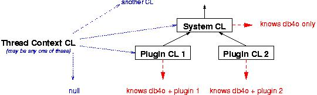

This topic applies to Java version only
Classloaders are organized in a tree structure, where classloaders deeper down the tree (usually) delegate requests to their parent classloaders and thereby 'share' their parent's knowledge.

An in-depth explanation of the classloaders functionality is beyond the scope of this documentation. Starting points might be found here:
http://www.javaworld.com/javaworld/javaqa/2003-06/01-qa-0606-load.html
http://java.sun.com/developer/technicalArticles/Networking/classloaders/
http://java.sun.com/products/jndi/tutorial/beyond/misc/classloader.html